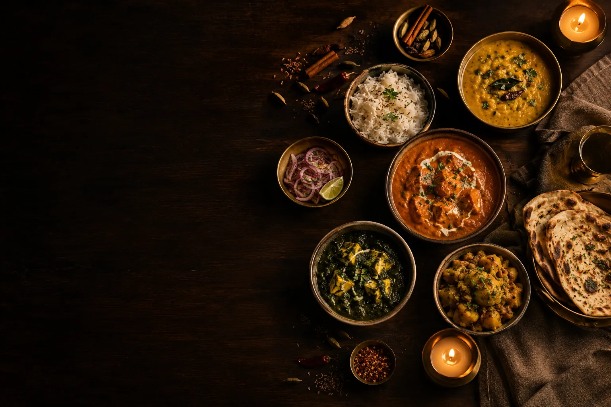

The Menu
Regional Roots,
Modern Hands.
Dishes drawn from the kitchens of Punjab, Hyderabad, the Konkan coast and beyond. Concept menu — demo prices.

The Menu
Dishes drawn from the kitchens of Punjab, Hyderabad, the Konkan coast and beyond. Concept menu — demo prices.